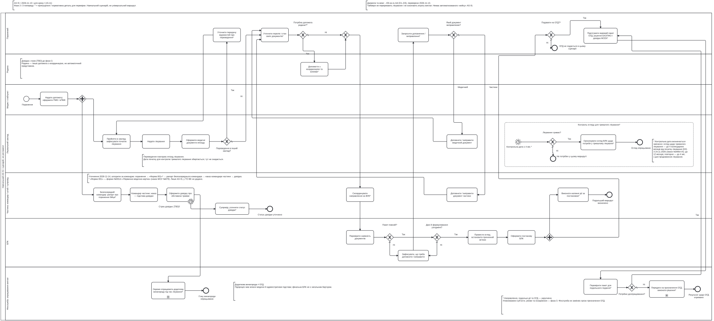

Документ бізнес-вимог (BRD), схема поточного процесу AS IS у BPMN і примітка про використання ШІ. Крок I групового проєкту.
| Назва проєкту | «Кейс поранення», модуль цифрової екосистеми Міноборони (функція в Армія+) |
|---|---|
| Автори документа | Назар Обод, Олександр Галака, Маргарита Вовчок, Єгор Ісаков, Сергій Майборода, Михайло Фомін |
| Дата і версія | 15.11.2026, v1.0 |
| Курс | KSE, «Product Management у війську: побудова цифрових екосистем під час війни» (MIL600) |
Після поранення військовослужбовець проходить довгий шлях: первинна медична картка, лікування в одному чи кількох закладах, документи частини (рапорт, наказ, довідка про обставини травми), направлення на ВЛК, постанова ВЛК і виплати. Кожен документ готує інший орган у власній системі. Медик заповнює еПМК у МІС ЗСУ, заклад працює у своїй медичній системі, частина веде свій документообіг, у ВЛК і фінслужби свої контури.
Документи між установами пересилають самі установи. Наприклад, довідку про обставини травми частина надсилає і закладу охорони здоров’я, і бійцю. Проте весь шлях цілком ніхто не бачить. Боєць не завжди знає, які документи йому потрібні, і не бачить, на якому етапі кожен із них: чи вже є наказ, чи підписали довідку, чи дійшов пакет до ВЛК. Щоб це з’ясувати, він дзвонить у частину й заклад або просить допомоги в родини чи служби супроводу.
Міноборони підтверджує, що помилки в медичних і службових документах можуть повернути пакет на доопрацювання і затримати оформлення статусів і виплат. Як часто це трапляється і скільки триває, МОУ не публікує. Сама помилка в документі права на виплату не позбавляє.
Головна проблема (команда прийняла її як гіпотезу): ні поранений, ні частина не бачать шляху від медичних документів до рішення ВЛК і його виконання.
| Питання | Відповідь команди |
|---|---|
| Чому це проблема? | Боєць не знає повного переліку своїх документів і їхнього стану. Пакет можуть повернути на доопрацювання (це підтверджує МОУ), і тоді все затягується. Строки, зокрема строк видачі довідки і строк огляду ВЛК під час тривалого лікування, ніхто не стежить від початку до кінця. Один поранений в інтерв’ю Texty (2024) розповів, що про потрібну довідку дізнався випадково, від лікаря. |
| Для кого це проблема? | Насамперед для пораненого чи хворого військовослужбовця на лікуванні. Також для родини, яка йому допомагає; для командира, штабу й діловода частини, які мають вчасно оформити рапорт, наказ і довідку; для служби супроводу, якій треба бачити своїх поранених у різних закладах; для ВЛК, яка отримує неповні пакети; для фінслужби, якій потрібні правильні підстави для виплат. |
| Як це впливає на систему? | Постанову ВЛК і виплати доводиться чекати довше. Частина й супровід витрачають час на дзвінки й уточнення. Росте напруга: тема ВЛК і лікування найчастіша у скаргах Військовому омбудсману (див. нижче). Наскільки великий кожен із цих наслідків, ще треба виміряти. |
| Факт | Джерело |
|---|---|
| У жовтні 2026 року Військовий омбудсман отримав 2 455 скарг, з них 23% стосувалися направлення на ВЛК та лікування. Це найбільша категорія. З травня по жовтень 2026 її частка була від 19 до 23%. | Офіс Військового омбудсмана, звіти за травень–жовтень 2026 (опубл. 07.06–06.11.2026) |
| Поранені однієї бригади можуть лікуватися в кількох десятках закладів. За цивільними медзакладами закріплено понад 500 фахівців ТЦК із супроводу. | КМУ / МОУ, 28.04.2026 |
| Цифрові джерела вже є: еПМК у МІС ЗСУ працює з лютого 2025 року, електронні постанови ВЛК обов’язкові з 01.04.2025, МОУ розробляє ІКС «Супровід». Тож кейс можна зібрати з подій у наявних системах, без нових паперів. | МОУ, 26.12.2025; 05.03.2025; 19.01.2026 |
| Змінюються строки огляду. Зараз огляд ВЛК щодо тривалого лікування має відбутися не пізніше ніж через 4 місяці від початку лікування. З 24.11.2026 діє нова редакція п. 11 ст. 10-1 Закону №2011-XII: огляд не пізніше закінчення безперервного лікування й відпустки для лікування, але не пізніше ніж через 12 місяців від початку лікування; якщо стаціонарне лікування продовжили, повторний огляд потрібен не пізніше ніж через 4 місяці з дня продовження. Сервіс має знати, за якою редакцією рахувати строк для кожного кейсу. | Закон №2011-XII, редакція від 24.11.2026 (Закон №4954-IX від 19.08.2026), zakon.rada.gov.ua; звірено 15.11.2026 |
Вплив на боєздатність. Поки ВЛК не ухвалила постанову, невідомо, чи повернеться людина в стрій, лікуватиметься далі чи звільнятиметься. Частина в цей час не може планувати особовий склад, а поранений не може планувати своє життя. Скільки днів до цього очікування додає саме оформлення документів, ми поки не знаємо.
Межа висновку: це частка скарг, а не поранених чи пакетів документів, і категорія ширша за документи після поранення. Тому ці цифри показують контекст, а не стартовий рівень (baseline) продукту.
Відомо, що пакети повертають на доопрацювання (МОУ), що тема ВЛК і лікування найчастіша у скаргах (омбудсман) і що потрібні цифрові джерела вже існують (МОУ). Не знаємо [TBD]: медіану часу від поранення до постанови ВЛК; частку повернутих пакетів; затримку кожного виду виплати; скільки поранених не знають переліку й стану своїх документів; трудовитрати супроводу. Ці дані команда запитає в розпорядників. Нулі чи оцінки навмання замість них не ставимо.
Головна мета. Створити один «кейс поранення», який відкривається сам, коли в МІС ЗСУ з’являється погоджена еПМК. У ньому кожен бачить своє: поранений бачить перелік документів і стан кожного, частина бачить, що вона винна і до якого строку, супровід бачить усіх своїх поранених. Сервіс заздалегідь перевіряє, чи пакет технічно повний, і нагадує про строки.
Очікувані результати: коротший шлях до постанови ВЛК; менше повернень пакета; поранений знає, які документи готові, а яких ще бракує; частина бачить свої борги щодо документів; строки довідки й огляду під контролем; у служби супроводу менше ручної роботи.
| # | Ціль | Метрика | Baseline | Ціль за 12 міс. після запуску |
|---|---|---|---|---|
| BO-1 | Скоротити час від поранення до постанови ВЛК | Медіана днів; окремо незавершені кейси й клінічний час | [TBD] | −30% |
| BO-2 | Зменшити кількість повернень пакетів на доопрацювання | % пакетів, повернених хоча б раз (ВЛК і ОГД окремо) | [TBD] | < 10% |
| BO-3 | Прибрати адміністративні зупинки виплат через пропущений огляд | Кількість підтверджених зупинок із цієї причини | [TBD] | 0, якщо явище підтвердиться |
| BO-4 | Зовнішній контекст: скарги на тему ВЛК і лікування | Частка для контексту, не KPI продукту | 23% із 2 455 (жовт. 2026), довідково | Числової цілі не ставимо |
| BO-5 | Документи доходять до ВЛК без участі пораненого | % документів пакета, що надійшли у ВЛК без ручної участі пораненого чи родини | [TBD] | > 80% |
| BO-6 | Розвантажити служби супроводу | Активні кейси на одного фахівця; робочий час на кейс | [TBD] | [TBD] |
| BO-7 | Поранений знає перелік і стан своїх документів | % кейсів, у яких поранений бачить повний перелік потрібних документів і етап кожного | [TBD] | [TBD] |
Цілі й горизонт 12 місяців запропонувала команда; це не прогноз і не виміряний результат. Baseline стоїть як [TBD], поки розпорядники даних не нададуть агрегати.
| # | Вимога |
|---|---|
| BR-1 | Кожен випадок поранення має один наскрізний кейс, доступний учасникам процесу відповідно до їхніх ролей. |
| BR-2 | Документ, який держава вже має в цифровому вигляді, не повинен нестися чи передаватися пораненим вручну. |
| BR-3 | Технічна комплектність пакета перевіряється завчасно; причинний зв’язок встановлює ВЛК. Чекліст не підміняє медичного рішення. |
| BR-4 | Передача відомостей про переведення між закладами підтверджується одержувачем; відсутність події створює задачу уточнення. |
| BR-5 | Строки контролюються від підтвердженої початкової події; невідома дата не заповнюється припущенням. |
| BR-6 | Частина бачить, які документи вона винна кожному пораненому і чи не прострочено строк. |
| BR-7 | Командир не має доступу до діагнозів і медичних записів; доступ розмежовано за ролями. |
| BR-8 | Рішення ухвалюють уповноважені особи (командир, ВЛК, розпорядник коштів); система їх не фіналізує. |
| BR-9 | Процес працює для поранених без смартфона або в тяжкому стані — через службу супроводу. |
Входить: кейс відкривається за погодженою еПМК (або, як резерв, його відкриває командир чи супровід без створення медичного запису); далі лікувальний маршрут, документи частини, зокрема довідка про обставини травми (додаток 5 до Положення про ВЛК, наказ МОУ №402), направлення на ВЛК (його дає командир за рекомендацією лікаря або заклад, що лікує), постанова ВЛК і виплати. Додаткову винагороду за стаціонарне лікування відстежуємо ще до ВЛК. ОГД і виплати, що залежать від тяжкості поранення, з’являються лише після постанови ВЛК.
Не входить: медична допомога, тактична евакуація, медична оцінка, реабілітація після звільнення, оскарження рішень ВЛК у суді, питання родин загиблих і зниклих.
| Група | Хто | Інтерес і роль у процесі |
|---|---|---|
| Користувачі | Поранений або хворий військовослужбовець | Основний користувач: швидко й без втрат пройти ВЛК, отримати виплати, знати стан своїх документів |
| Командир частини, штаб, діловод; служба супроводу | Вчасно оформити рапорт, наказ, довідку, направлення; бачити всіх своїх поранених | |
| Родина або довірена особа | Допомагає, коли боєць не може сам; у першій версії працює через супровід, без власного доступу | |
| Замовники | Міністерство оборони (ГУІТ), відповідальні за Армія+ | Можливий спонсор і власник продукту; погоджують інтеграції й повноваження |
| Командування ЗСУ, Медичні сили ЗСУ | Облік особового складу; повний і правильний пакет на ВЛК | |
| Суміжні підрозділи та розробники | ВЛК | Ухвалює постанову, отримує пакет |
| Лікарі військових і цивільних закладів | Джерело даних; не хочуть ще однієї системи для введення | |
| Фінслужба, розпорядники бюджетних коштів | Правильні підстави для винагороди й ОГД | |
| Власники МІС ЗСУ, ІКС «Супровід», СЕДО; МОЗ і НСЗУ (ЕСОЗ) | Погоджують обмін даними й підстави доступу | |
| Джерело даних про біль | Офіс Військового омбудсмана | Статистика скарг; зацікавлений у меншій кількості звернень |
На наступних сторінках (формат A3) схема одного маршруту після поранення від дій противника. Вона показує, як процес працює зараз, без покращень. Окремо додаємо файл as-is.bpmn (BPMN 2.0 XML, відкривається в bpmn.io або Camunda Modeler) і зображення схеми.
| Елемент | Як у схемі |
|---|---|
| Доріжки (7) | Поранений; Родина; Медик / стабпункт; Лікувальний заклад; Частина (командир, штаб, супровід); ВЛК; Фінслужба. Усі в одному пулі «Поранення → документи → ВЛК → окремі виплати». |
| Початкова подія | «Поранення». |
| Основна послідовність |
|
| Кінцеві події (результат) | Основна: «Подальший маршрут визначено». Інші: «Гілку винагороди опрацьовано», «Результат щодо ОГД отримано» або «ОГД не подається в цьому сценарії», «Статус довідки уточнено», «Огляд опрацьовано». |
| Нотація | Ромб «X» означає вибір однієї гілки, ромб «+» запускає паралельні гілки, пунктир позначає неперериваний подієвий підпроцес, «*» позначає припущення або нормативну деталь, яку ще перевіряємо. |
| Площина | Що показує схема |
|---|---|
| Люди | 7 ролей. «Частина» об’єднує командира, медслужбу, штаб і супровід, а «Фінслужба» є узагальненою роллю. |
| Процес | Лікування й документи йдуть паралельно; є цикли переведення між закладами і доопрацювання пакета. |
| Правила | Довідку складає начальник медслужби, підписує командир частини, підставою є наказ командира (наказ МОУ №402). Строк довідки становить 5 днів, якщо травму отримано внаслідок дій противника (ст. 260 Статуту внутрішньої служби); команда рахує його від надходження на лікування. Огляд ВЛК під час лікування: зараз не пізніше 4 місяців від початку лікування, з 24.11.2026 не пізніше 12 місяців, повторно не пізніше 4 місяців з дня продовження (п. 11 ст. 10-1 Закону №2011-XII). На ВЛК направляє командир за рекомендацією лікаря або заклад, що лікує. |
| Системи і дані | МІС ЗСУ (еПМК, постанови ВЛК), системи закладів і ЕСОЗ, документообіг частини та СЕДО, канали фінслужби. Спільного кейсу між ними немає. |
Як написано і як, імовірно, є насправді. Припущення позначено на схемі «*». За нормою про прибуття й вибуття бійця повідомляє заклад, але, схоже, уточнювати це доводиться самому пораненому (H1). Родина допомагає з копіями й координацією (H2). Документи пересилають установи, але боєць не завжди знає повний перелік і стан своїх документів (H3). Хто насправді ініціює направлення, ще не з’ясовано (H4). Контроль стану довідки і дії після постанови на схемі згорнуті (H5). Процес ми ще не спостерігали й інтерв’ю не проводили; саме ними перевіримо ці припущення.

Схема векторна, у PDF її можна збільшувати. На двох наступних сторінках та сама схема крупніше: ліва і права частини з перекриттям.
Команда використовувала ШІ на всіх етапах кроку I. Інструменти: Claude (Anthropic; у Claude Code моделі Claude Fable 5.2 і Claude Opus 5.5) і Codex (OpenAI). Повний журнал із датами лежить у репозиторії команди (docs/ai-use.md).
Команда обрала проблему (12.11.2026) і прийняла її як гіпотезу. Вона ухвалила рішення щодо обсягу, виплат, строку довідки, направлення на ВЛК і повного алгоритму AS IS (рапорт, наказ, довідка) та уточнила, що «Форма 001» означає первинну медичну картку. 15.11.2026 команда прочитала чернетку BRD, виправила опис проблеми (документи пересилають установи, а бійцеві бракує переліку й статусу) і знайшла нову редакцію закону про строк ВЛК. Висновки ШІ команда перевіряла і не вважала їх юридичною чи медичною експертизою.
| Дата | Інструмент | Промпт |
|---|---|---|
| 09.11.2026 | Claude | «проаналізуй завдання 1 і знайди болючу проблему у війську з відгуками і цифрами» |
| 12.11.2026 | Claude | «продумай функціонал фічі в Армія+ для поранених і створи репозиторій» |
| 12–13.11.2026 | Codex | «Прочитай AGENTS.md і docs/codex-task.md. Виконай фазу 1. Наприкінці зроби незалежне рев’ю, відкрий PR зі звітом для затвердження» (перевірка джерел, уточнення проблеми й BRD) |
| 13.11.2026 | Codex | «Фазу 4 (BPMN AS IS) до фаз 2 і 3, бо крок I здаємо 15.11; наприкінці рев’ю, PR і зупинись» |
| 13.11.2026 | Codex | «Затверджую фазу 4. Далі виконай фазу 2 (голоси людей і карта болів)…»; «…Виконай фазу 3» (нормативка) |
| 14.11.2026 | Claude Code | «Повний аудит усього репозиторію… Виправлення знайдених помилок і суперечностей… Повторне незалежне рев’ю результату, докази перевірок і PR для затвердження» |
| 14.11.2026 | Claude Code | «сформуй питання для команди, тільки так щоб вони зрозуміли»; далі відповіді команди (автори, строк довідки, ОГД, направлення закладом, повний алгоритм AS IS) |
| 15.11.2026 | Claude Code | «Первинна картка (МОУ №879)»; «треба здати» разом із текстом завдання кроку I (збирання цього документа з матеріалів репозиторію) |
| 15.11.2026 | Claude Code | Відгук команди на чернетку: документ боєць вручну не збирає, проблема в переліку й статусі документів; текст треба зробити менш «ШІшним»; строк ВЛК з 24.11 становить 12 місяців (правки й редагування стилю) |
Примітка охоплює використання ШІ, зафіксоване в журналі команди станом на 15.11.2026.
Посилання 1–8 перевірено 12–14.11.2026. Повний реєстр джерел, тверджень і статусів перевірки ведеться в репозиторії команди.